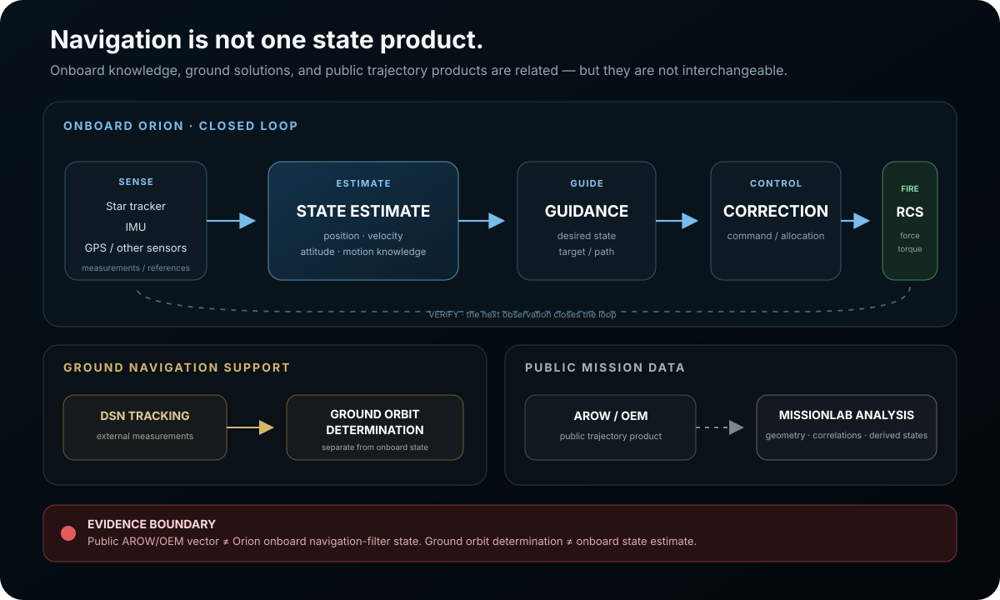

Guidance, navigation and control
Sense. Estimate. Guide. Control. Fire. Verify.
Experiment with the control loop behind Orion proximity operations using AUTO and MANUAL modes, disturbance injection, translation and rotation controls, and explicit evidence boundaries.
Fly Orion · GNC experience
Bring Orion into the target box.
Artemis II actually completed an approximately 70-minute proximity-operations demonstration around the detached ICPS. This simplified interaction teaches the control loop behind that task. It is not a replay of private flight data.
Use THC to move Orion without changing its attitude. Use RHC to rotate Orion. The white target represents the detached ICPS reference target used during the real demonstration.
Start by watching the guidance loop reduce translation and pointing error. Then switch to Manual Mode and fly the same capture yourself.
- 00INITIAL ERROR
- 01SENSE
- 02ESTIMATE
- 03GUIDE
- 04CONTROL
- 05FIRE
- 06VERIFY
- 07CONVERGENCE
30-SECOND TUTORIAL
The simulation starts with an offset state. Compare the desired state with the estimated state to form an error; guidance and control turn that error into a command, RCS changes the spacecraft state, and sensors close the feedback loop.
Show the actual GNC evidence architectureonboard ≠ ground ≠ public state · control-law limits
Public evidence establishes the architecture, not private filter internals.
MissionLab keeps Orion’s onboard state estimate, ground orbit determination, and the public AROW/OEM state product separate. It also preserves the difference between a confirmed RCS capability/use statement and an unavailable individual-thruster firing history.
Open the GNC deep dive →